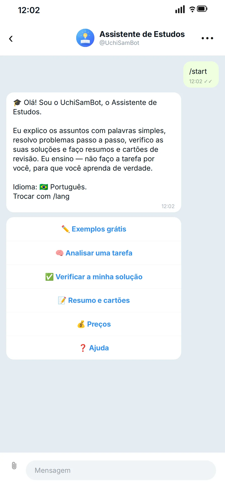
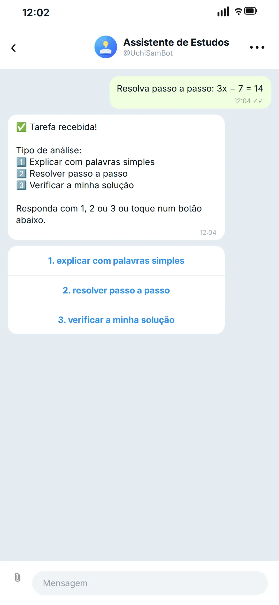
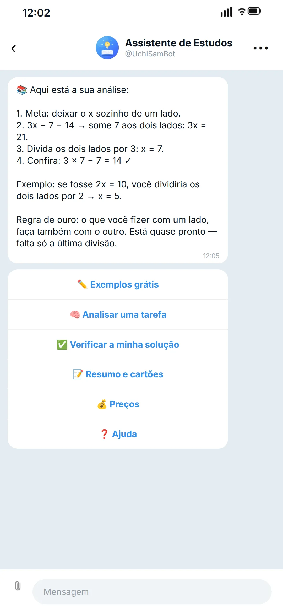

Dever de casa que finalmente faz sentido
O UchiSamBot divide sua tarefa em passos, explica o assunto em palavras simples, confere suas respostas e faz flashcards — direto no Telegram, a qualquer hora do dia.
Como funciona
- 1
Abra o bot
Toque no botão e aperte Start — não precisa instalar nada.
- 2
Envie uma tarefa
Digite sua pergunta ou tire uma foto do enunciado.
- 3
Receba a explicação
O bot percorre a solução passo a passo e explica cada etapa.
- 4
Confira você mesmo
Peça para conferir sua resolução ou receba um resumo e flashcards.
O que tem dentro
Explicações passo a passo
Cada etapa é explicada — não só a resposta final.
Tarefas com foto
Fotografe o enunciado direto do livro.
Linguagem simples
Do simples ao complexo, como um professor particular paciente.
Verificação da resolução
Encontra exatamente onde está o erro.
Resumos e flashcards
Flashcards curtos para revisar antes da prova.
A qualquer hora do dia
Sem esperar por um professor particular quando você ficar preso.
Não só respostas. Aprenda a resolver o próximo exercício.
As explicações passo a passo mostram por que cada etapa funciona, para você resolver um exercício parecido por conta própria.
Matérias escolares
E qualquer outra dúvida escolar em que você ficar preso.
Conversas reais com o bot
É assim que uma explicação aparece — o bot funciona em 9 idiomas.



Preços
Pagamento via Telegram Stars, direto no chat.
Primeiras 2 explicações
Experimente o bot — não precisa pagar.
Pacote com 5 explicações
Cerca de 24 Stars por explicação — economize 20%.
Pacote com 15 explicações
Cerca de 20 Stars por explicação — economize 33%.
Explicação avulsa — 30 Stars.
Convide um amigo — quando ele resolver a primeira tarefa, você ganha mais uma explicação grátis.
Perguntas frequentes
Isso é colar?
Não. O bot explica e ensina: mostra cada passo e a regra por trás dele, para que você resolva a próxima tarefa sozinho.
Quais matérias ele cobre?
Matemática, inglês, física, química e história — e, em geral, qualquer dúvida escolar em que você ficar preso.
Em que idiomas ele fala?
Nove idiomas: russo, inglês, espanhol, português, hindi, indonésio, turco, vietnamita e ucraniano. Troque quando quiser com /lang.
Como eu pago?
Com Telegram Stars, direto no chat. As primeiras 2 explicações são grátis; depois disso, você pode comprar uma explicação avulsa ou um pacote.
Preciso instalar alguma coisa?
Não. Funciona dentro do Telegram — no celular ou no computador.
O que são Telegram Stars?
Stars são a moeda interna do Telegram. Você adiciona uma vez dentro do Telegram — o app oferece o pagamento de sempre (cartão, App Store ou Google Play) — e depois paga pelas explicações direto no chat. Sem assinatura e sem cobrança automática: você só paga quando quiser. Não precisa de Telegram Premium.
Onde eu consigo Stars?
Direto no chat: quando você toca para comprar uma explicação, o Telegram abre a janela de pagamento e oferece recarregar seu saldo de Stars, se estiver baixo. O saldo fica na sua conta do Telegram e funciona em qualquer bot que aceite Stars.
Quanto tempo leva uma explicação?
Normalmente em menos de um minuto: você envia a tarefa e a explicação chega no chat — geralmente em 5–60 segundos. Se o servidor estiver ocupado, pode levar até dois minutos.
E se uma explicação falhar?
Tente de novo em alguns minutos — às vezes há sobrecargas curtas. Se continuar falhando, fale conosco pelo formulário de contato no fim da página — vamos verificar.
Qual é a diferença para um chatbot de IA comum?
Diferente de um chatbot comum, aqui há um método de ensino: cada explicação mostra os passos e, nas resoluções, o bot para um passo antes da resposta para você terminar sozinho. Além disso, suas tarefas ficam no nosso próprio servidor — não são enviadas a serviços de IA de terceiros.
O bot pode errar?
As explicações são geradas por IA, por isso pode haver erros. O bot mostra cada passo para você conferir o raciocínio com o livro didático ou com o professor. Se uma resposta parecer errada, envie para nós pelo formulário: lemos todas as mensagens.
- Sem cadastro e sem dados pessoais.
- Funciona no nosso próprio servidor na União Europeia (Finlândia).
- Todo o processamento de IA acontece na nossa própria infraestrutura — as tarefas não são enviadas a serviços de IA de terceiros.
- Você pode pedir a exclusão dos dados a qualquer momento — os pais podem solicitar em nome dos filhos.
Está preso numa tarefa agora mesmo?
Envie para o bot — as primeiras 2 explicações são grátis.
Abrir no TelegramDúvidas ou sugestões?
Escreva para nós — sua mensagem vai direto para a nossa equipe e respondemos no seu e-mail. Sem spam e sem listas de e-mails.
Obrigado! Recebemos sua mensagem e vamos responder no seu e-mail.
A mensagem não foi enviada. Verifique a conexão e tente de novo — o texto continua no campo.
O formulário está ocupado agora, então a mensagem não foi enviada. Tente de novo em um minuto — o texto continua no campo.
Usamos seu e-mail apenas para responder a esta mensagem. Política de Privacidade (EN/RU)